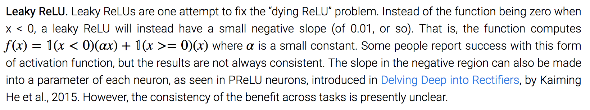

Course starts soon..
We will start now with a quiz based on the first week material
You have 6 minutes to answer the quiz.
The quiz link:
Quiz Link
It will be copied in Mattermost and in the Zoom chat.
Leaky ReLU and negative numbers on the activation
Cost function for unsupervised learning
difference between activation functions in hidden layers and output layer
from CS231:
much wider topic: as an idea, the function it is used for is usually different
a typical example is to "learn" the characteristics of the input, for example dividing into different clusters or learning a lower dimensional representation. In this case the cost function can be defined as the difference betweeen the "learned" representation and the input and is then minimized through the training.
For more information, check out this paper from Adam Coates and Andrew Ng.- What theme would you like to address?
- What kind of data you want to use?
- Remember to start simple and focus on feed forward neural networks.
- For this course, better a small project that works and can be extended than a big project abandoned halfway through.
A. Krizhevsky, I. Sutskever, G. E. Hinton
Proceedings of the 25th International Conference on Neural Information Processing Systems (Lake Tahoe, NV, Dec. 2012), 1097–1105.
Q2: Does having more hidden layers require more iterations to train?

A cool video on state-of-the-art on hide/escape with AI!
- Finish the fourth week of the course
- Do the Programming Assignments: Build your Neural Network Step by Step and Deep Neural Network Application
- Prepare an idea for a project, or be ready to discuss projects ideas and start forming teams